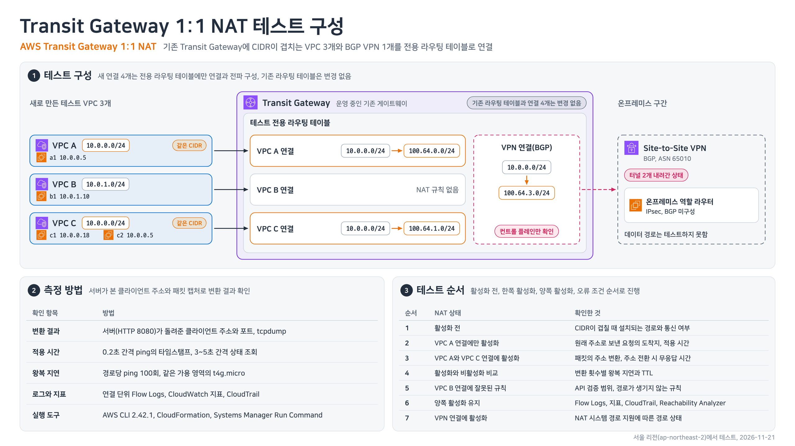
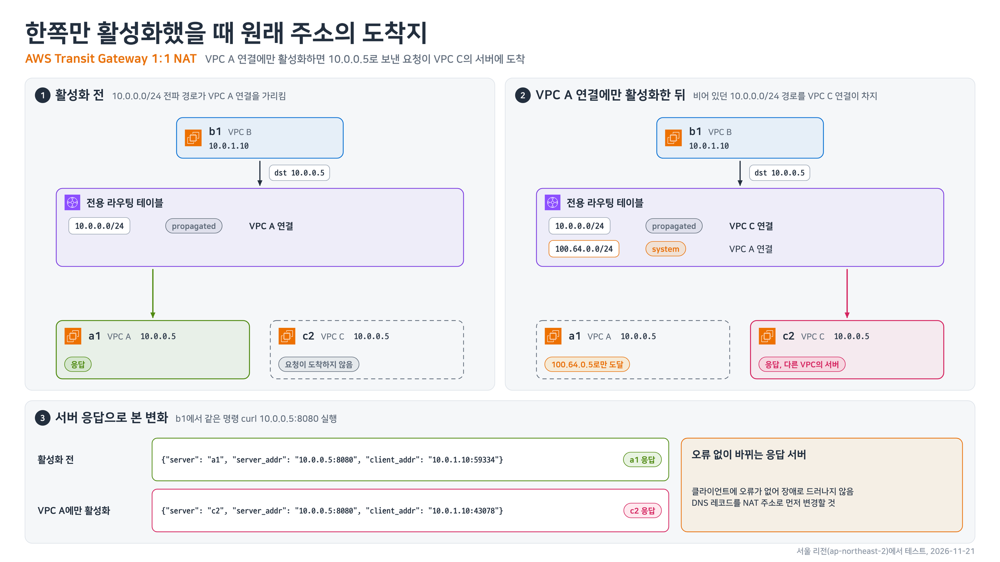
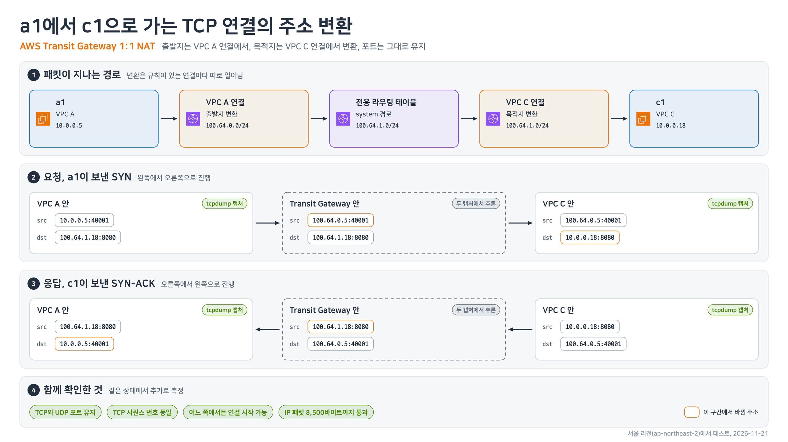
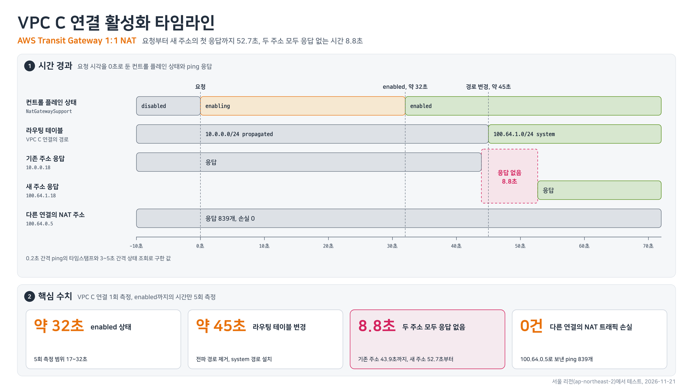
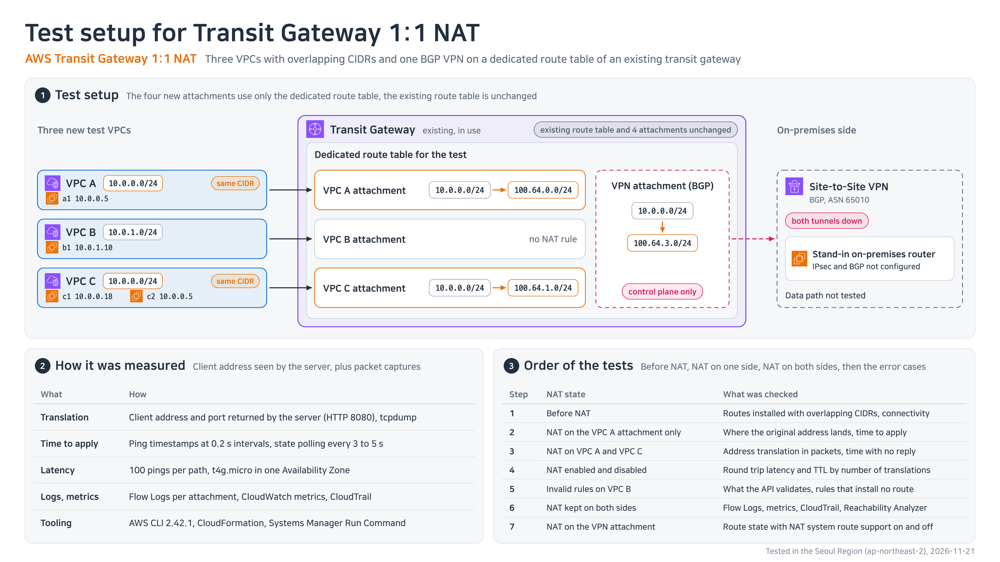
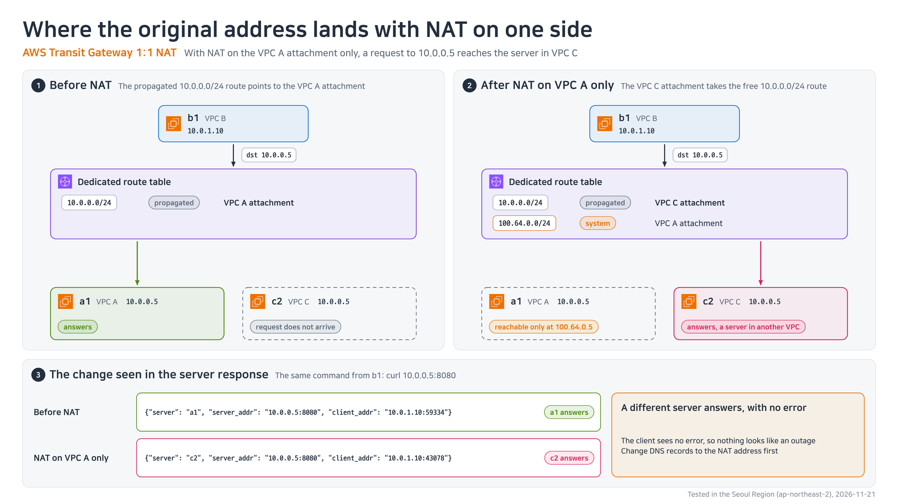
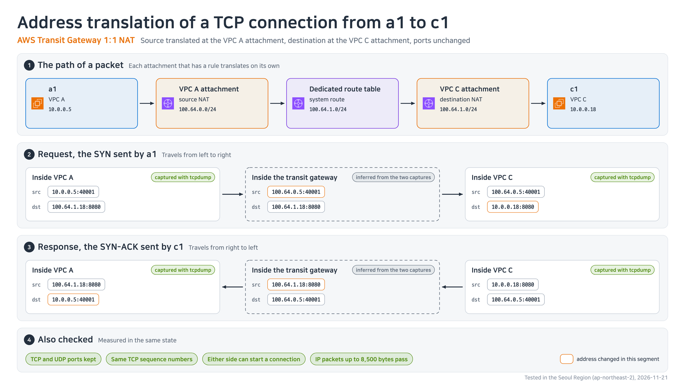
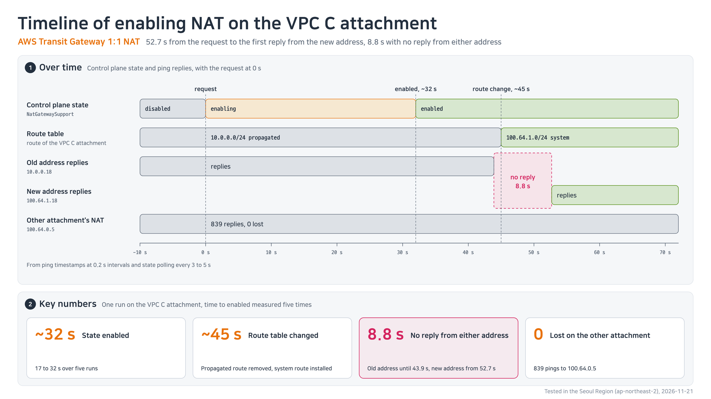

AWS Transit Gateway 1:1 NAT를 서울 리전의 기존 Transit Gateway에서 직접 테스트해 보았습니다. CIDR이 같은 두 VPC는 양쪽 연결에 NAT를 활성화하자 통신했고 활성화에는 연결당 1분 안팎이 걸렸으며 주소가 바뀌는 순간 8.8초 동안 응답이 없었습니다. 하지만 한쪽에만 활성화하면 원래 주소로 가던 요청이 끊기지 않고 CIDR이 같은 다른 VPC의 서버에 도착했고 연결 사이의 변환 대역 중복은 API가 막지 않았습니다.I tested AWS Transit Gateway 1:1 NAT hands-on, on an existing transit gateway in the Seoul Region. Two VPCs with the same CIDR could talk once NAT was enabled on both attachments. Enabling took about a minute per attachment, and neither address answered for 8.8 seconds at the moment the address changed. With NAT on one side only, however, requests to the original address were not dropped. They reached a server in the other VPC that uses the same CIDR, and the API did not stop two attachments from using the same NAT CIDR.
AWS는 2026년 10월 23일 AWS Transit Gateway와 AWS Cloud WAN의 1:1 NAT를 발표했고 11월 16일 AWS 네트워킹 블로그에서 사용 시나리오 세 가지를 소개했습니다. 이 글은 그중 VPC끼리 CIDR이 겹치는 시나리오를 서울 리전의 기존 Transit Gateway에서 재현하고 문서에 적힌 동작을 패킷 캡처와 API 호출로 하나씩 확인해 본 기록입니다. 전체 테스트 구성은 그림 1과 같습니다. 운영 중인 Transit Gateway에 CIDR이 겹치는 새 VPC 3개와 BGP VPN 연결 1개를 추가하고 테스트 전용 라우팅 테이블에만 연결했습니다.

VPC 연결에 1:1 NAT를 활성화하면 그 VPC를 원래 주소로 부르던 클라이언트는 연결을 잃는다고 예상했습니다. AWS 블로그와 User Guide가 그렇게 설명하기 때문입니다. 테스트 결과는 달랐습니다. CIDR이 같은 VPC 2개 가운데 한쪽에만 NAT를 활성화하자 원래 주소 10.0.0.5로 보낸 요청은 끊기지 않고 다른 VPC에 있는 같은 주소의 서버에 도착했습니다.
# 활성화 전, b1에서 curl 10.0.0.5:8080
{"server": "a1", "server_addr": "10.0.0.5:8080", "client_addr": "10.0.1.10:59334"}
# VPC A 연결에만 활성화한 뒤, b1에서 같은 명령
{"server": "c2", "server_addr": "10.0.0.5:8080", "client_addr": "10.0.1.10:43078"}확인하려던 것은 세 가지입니다. CIDR이 같은 두 VPC가 실제로 통신하는지, 활성화하는 동안 트래픽이 얼마나 끊기는지, 변환한 뒤 로그와 지표에 어느 주소가 남는지입니다.
01
1:1 NAT는 Transit Gateway 연결(Attachment)마다 규칙을 두고 IPv4 주소를 일대일로 바꾸는 기능입니다. NAT 게이트웨이 리소스나 NAT 어플라이언스를 따로 배포하지 않습니다. API에서는 ModifyTransitGatewayAttachmentNatConfiguration 작업으로 구성합니다. 파라미터는 NatGatewaySupport, NatGatewayRules, NatSystemRouteSupport 세 가지입니다.
규칙 하나는 원본 대역(MatchSourceCidr)과 변환 대역(NatCidr)의 쌍입니다. 연결로 들어오는 패킷의 출발지가 원본 대역에 속하면 Transit Gateway는 출발지를 변환 대역의 같은 위치 주소로 바꿉니다(SNAT). 연결로 나가는 패킷의 목적지가 변환 대역에 속하면 원본 주소로 복원합니다(DNAT). 10.0.0.0/24를 100.64.0.0/24로 변환하면 10.0.0.5는 항상 100.64.0.5가 됩니다. 변환은 연결 상태를 저장하지 않고 포트를 바꾸지 않으므로 응답 트래픽용 규칙이 필요 없고 어느 쪽에서든 연결을 시작할 수 있습니다.
아파트 단지에 비유하면 이해하기 쉽습니다. 두 단지가 모두 101동부터 동 번호를 매겼고 택배는 물류센터 한 곳을 거친다고 가정합니다. 물류센터는 101동 502호라는 주소만으로는 어느 단지인지 알 수 없습니다. 1:1 NAT는 물류센터가 단지마다 대외용 동 번호를 따로 정해 주는 방식입니다. A 단지의 101동은 밖에서 201동으로, C 단지의 101동은 301동으로 부르고 호수는 그대로 둡니다. 보내는 사람은 상대를 대외용 번호로 적고 물류센터는 들어온 상자의 보낸 주소와 내보내는 상자의 받는 주소를 대응표대로 바꿔 적습니다. 대응표가 고정이어서 누가 먼저 보냈는지 기억할 필요가 없습니다. 비유와 다른 점도 있습니다. 변환은 연결마다 따로 일어나므로 규칙이 없는 연결에서 들어온 패킷은 출발지가 바뀌지 않습니다.
User Guide가 정한 규칙의 제약은 네 가지입니다. 변환 대역은 RFC 1918 또는 RFC 6598(100.64.0.0/10) 범위여야 하고 프리픽스 길이는 원본 대역과 같아야 합니다. 한 연결의 규칙끼리는 대역이 겹칠 수 없으며 규칙은 연결당 50개, Transit Gateway당 1,000개까지 만들 수 있습니다. IPv4만 변환하고 IPv6 트래픽은 변환 없이 통과합니다.
aws ec2 modify-transit-gateway-attachment-nat-configuration \
--transit-gateway-attachment-id tgw-attach-0aaaaaaaaaaaaaaaa \
--nat-gateway-support enable \
--nat-gateway-rules '[{"RuleNumber":100,"MatchSourceCidr":"10.0.0.0/24","NatCidr":"100.64.0.0/24"}]'--nat-gateway-rules에 지정한 목록은 기존 규칙 전체를 교체합니다. 유지할 규칙을 목록에서 빠뜨리면 그 규칙은 삭제됩니다.
NAT를 활성화하면 다른 네트워크는 변환 대역 주소로 이 연결에 접근하므로 Transit Gateway 라우팅 테이블에 변환 대역으로 가는 경로가 있어야 합니다. 이 경로를 Transit Gateway가 자동으로 설치할지 정하는 설정이 NAT 시스템 경로 지원(NatSystemRouteSupport)이고 자동으로 설치된 경로는 system이라는 새 경로 유형으로 표시됩니다. 같은 프리픽스에서는 정적 경로, system 경로, 전파 경로 순으로 우선합니다.
| 연결 유형 | NAT 시스템 경로 지원 | 변환 대역 경로가 만들어지는 방법 |
|---|---|---|
| VPC | 항상 활성화. 비활성화 요청은 거부 | 규칙의 원본 대역이 VPC CIDR과 정확히 일치하면 전파 경로를 system 경로로 교체 |
| Direct Connect Gateway, Site-to-Site VPN(BGP) | 활성화(기본값) 또는 비활성화 | Transit Gateway가 system 경로를 설치하거나, 온프레미스 라우터가 변환 대역을 BGP로 광고 |
| Site-to-Site VPN(정적 라우팅), 피어링 | 항상 비활성화 | 변환 대역으로 가는 정적 경로를 직접 추가 |
| Connect, VPN Concentrator | 항상 비활성화 | BGP 피어가 변환 대역을 광고 |
표 1. 연결 유형별 NAT 시스템 경로 지원. Amazon VPC Transit Gateway User Guide의 라우팅 동작 문서를 옮긴 것입니다
VPC 연결에서는 경로가 추가되지 않고 교체됩니다. NAT를 활성화하면 원래 CIDR로 가는 전파 경로가 사라집니다. 첫 챕터의 결과는 이 교체에서 나왔습니다.
02
테스트는 2026년 11월 21일 서울 리전(ap-northeast-2)의 가용 영역 하나에서 진행했습니다. 대상은 VPC 연결 3개와 Direct Connect Gateway 연결 1개가 이미 있는 운영 중인 Transit Gateway입니다. VPC 연결에 NAT를 활성화하면 전파 경로가 교체되므로 기존 연결은 변경하지 않았습니다. 대신 그림 1처럼 새 VPC 3개를 같은 Transit Gateway에 연결하고 전용 라우팅 테이블 하나에만 라우팅 테이블 연결(Association)과 전파(Propagation)를 구성했습니다. 기존 라우팅 테이블의 경로는 테스트 전후로 같았습니다.
| VPC | CIDR | 인스턴스와 주소 | 변환 대역 |
|---|---|---|---|
| A | 10.0.0.0/24 | a1 = 10.0.0.5 | 100.64.0.0/24 |
| B | 10.0.1.0/24 | b1 = 10.0.1.10 | 없음 |
| C | 10.0.0.0/24 | c1 = 10.0.0.18, c2 = 10.0.0.5 | 100.64.1.0/24 |
표 2. 테스트 VPC와 인스턴스. 주소 체계는 AWS 블로그의 첫 번째 시나리오와 같게 구성했습니다
VPC A와 VPC C는 CIDR과 서브넷 구성이 같고 a1과 c2는 주소까지 10.0.0.5로 같습니다. 각 VPC의 라우팅 테이블에는 10.0.0.0/16과 100.64.0.0/16을 Transit Gateway로 보내는 경로를 넣었고 보안 그룹은 10.0.0.0/8과 100.64.0.0/10을 허용했습니다. 모든 인스턴스는 8080 포트에서 서버 이름과 접속한 클라이언트의 주소, 포트를 돌려주는 HTTP 서버를 실행합니다. 서버가 본 클라이언트 주소로 변환 결과를 확인하려는 구성입니다.
인스턴스는 Amazon Linux 2023 t4g.micro이고 AWS CLI는 2.42.1입니다. 인프라는 AWS CloudFormation으로 만들었고 명령은 AWS Systems Manager Run Command로 실행했습니다. 패킷은 tcpdump로 캡처했고 시간은 0.2초 간격 ping의 타임스탬프와 3~5초 간격의 상태 조회로 구했습니다.
03
세 연결 모두 전파가 enabled 상태였지만 라우팅 테이블에는 10.0.0.0/24 경로가 하나만 설치됐습니다. 먼저 전파를 시작한 VPC A가 경로를 차지했고 VPC C의 전파는 오류 없이 무시됐습니다. VPC C에만 있는 10.0.0.18로는 어느 쪽에서도 응답이 없었습니다. 이 상태는 전파 상태, 라우팅 테이블의 경로, 연결의 NAT 설정을 조회하는 명령 세 개로 확인했습니다.
# 전파 상태
aws ec2 get-transit-gateway-route-table-propagations \
--transit-gateway-route-table-id tgw-rtb-0aaaaaaaaaaaaaaaa
# 라우팅 테이블의 경로
aws ec2 search-transit-gateway-routes \
--transit-gateway-route-table-id tgw-rtb-0aaaaaaaaaaaaaaaa \
--filters Name=state,Values=active,blackhole \
--query 'sort_by(Routes,&DestinationCidrBlock)[].[DestinationCidrBlock,Type,State,TransitGatewayAttachments[0].ResourceId]' \
--output text
# 연결의 NAT 설정
aws ec2 get-transit-gateway-attachment-nat-configuration \
--transit-gateway-attachment-id tgw-attach-0aaaaaaaaaaaaaaaa# 전파 상태: 세 연결 모두 enabled (출력을 정리한 것)
VPC A 연결 enabled
VPC B 연결 enabled
VPC C 연결 enabled
# 경로: 10.0.0.0/24는 하나만 설치 (리소스 ID를 VPC 이름으로 바꾼 것)
10.0.0.0/24 propagated active VPC A
10.0.1.0/24 propagated active VPC B
# NAT 설정: 기본값
{
"TransitGatewayAttachmentId": "tgw-attach-0aaaaaaaaaaaaaaaa",
"NatGatewaySupport": "disabled",
"NatSystemRouteSupport": "enable",
"NatGatewayRules": []
}VPC A 연결에만 10.0.0.0/24를 100.64.0.0/24로 변환하는 규칙을 넣고 활성화했습니다. 변경은 비동기로 적용되므로 NAT 설정을 다시 조회해 enabled와 activated가 된 것을 확인한 뒤, 활성화 전과 같은 명령으로 경로를 조회했습니다.
# VPC A 연결에 규칙을 넣고 활성화
aws ec2 modify-transit-gateway-attachment-nat-configuration \
--transit-gateway-attachment-id tgw-attach-0aaaaaaaaaaaaaaaa \
--nat-gateway-support enable \
--nat-gateway-rules '[{"RuleNumber":100,"MatchSourceCidr":"10.0.0.0/24","NatCidr":"100.64.0.0/24"}]'
# 적용이 끝났는지 확인 (enabled와 activated가 될 때까지 반복)
aws ec2 get-transit-gateway-attachment-nat-configuration \
--transit-gateway-attachment-id tgw-attach-0aaaaaaaaaaaaaaaa \
--query '[NatGatewaySupport, join(`,`, NatGatewayRules[].State)]' --output text# 활성화 명령의 응답
{
"TransitGatewayAttachmentId": "tgw-attach-0aaaaaaaaaaaaaaaa",
"NatGatewaySupport": "enabling",
"NatSystemRouteSupport": "enable",
"NatGatewayRules": [
{
"RuleNumber": 100,
"MatchSourceCidr": "10.0.0.0/24",
"NatCidr": "100.64.0.0/24",
"State": "pending"
}
]
}
# 조회 명령의 출력 (요청 후 2초, 20초)
enabling activated
enabled activated
# 요청 후 약 34초의 경로 (리소스 ID를 VPC 이름으로 바꾼 것)
10.0.0.0/24 propagated active VPC C
10.0.1.0/24 propagated active VPC B
100.64.0.0/24 system active VPC AVPC A의 전파 경로가 system 경로로 교체되자 그동안 설치되지 못했던 VPC C의 10.0.0.0/24 전파 경로가 그 자리에 들어왔습니다.

CIDR이 같은 다른 연결이 같은 라우팅 테이블에 전파하고 있으면 원래 주소로 가던 연결은 끊기지 않고 응답하는 서버만 바뀝니다. 클라이언트에서는 오류가 발생하지 않으므로 장애로 드러나지 않습니다. DNS 레코드를 NAT 주소로 먼저 변경하라는 AWS 블로그의 권고가 이 경우에 특히 필요합니다.
이 상태에서 VPC C의 c1이 a1의 NAT 주소 100.64.0.5로 접속하면 실패합니다. VPC C 연결에는 규칙이 없어서 출발지가 10.0.0.18 그대로 도착하고 a1은 이 주소를 자기 서브넷 안에서 찾다가 ARP가 실패해 응답을 보내지 못합니다. 같은 비유로 보면 C 단지에는 대외용 동 번호가 없어서 A 단지 주민이 받은 상자의 보낸 주소가 자기 단지에도 있는 101동으로 적혀 있는 상황입니다. CIDR이 같은 두 네트워크는 양쪽을 각각 다른 변환 대역으로 변환해야 한다는 User Guide의 설명과 일치합니다.
# a1의 tcpdump
IP 10.0.0.18 > 10.0.0.5: ICMP echo request, id 11654, seq 1, length 64
# a1의 ip neigh show
10.0.0.18 dev ens5 FAILEDVPC C 연결에는 같은 명령에서 연결 ID와 변환 대역만 바꿔 10.0.0.0/24를 100.64.1.0/24로 변환하는 규칙을 넣었습니다. 라우팅 테이블에는 system 경로 2개와 VPC B의 전파 경로 1개가 남아 AWS 블로그의 그림과 같은 구성이 됐습니다. a1에서 출발지 포트를 40001로 고정해 c1의 NAT 주소로 접속하고 양쪽에서 패킷을 캡처했습니다.
# a1에서 curl --local-port 40001 100.64.1.18:8080
{"server": "c1", "server_addr": "10.0.0.18:8080", "client_addr": "100.64.0.5:40001"}
# a1의 tcpdump (VPC A)
IP 10.0.0.5.40001 > 100.64.1.18.8080: Flags [S], seq 3728719791
IP 100.64.1.18.8080 > 10.0.0.5.40001: Flags [S.], seq 3107603732, ack 3728719792
# c1의 tcpdump (VPC C)
IP 100.64.0.5.40001 > 10.0.0.18.8080: Flags [S], seq 3728719791
IP 10.0.0.18.8080 > 100.64.0.5.40001: Flags [S.], seq 3107603732, ack 3728719792
출발지는 VPC A 연결에서, 목적지는 VPC C 연결에서 변환됐고 포트와 TCP 시퀀스 번호는 바뀌지 않았습니다. 같은 상태에서 방향과 대상을 바꿔 가며 확인한 결과는 표 3에 정리했습니다.
| 출발 | 접속한 주소 | 응답한 서버 | 서버가 본 클라이언트 주소 |
|---|---|---|---|
| a1 (VPC A) | 100.64.1.18 | c1 | 100.64.0.5 |
| c1 (VPC C) | 100.64.0.5 | a1 | 100.64.1.18 |
| a1 (VPC A, 10.0.0.5) | 100.64.1.5 | c2 (VPC C, 10.0.0.5) | 100.64.0.5 |
| c2 (VPC C, 10.0.0.5) | 100.64.0.5 | a1 (VPC A, 10.0.0.5) | 100.64.1.5 |
| b1 (VPC B) | 100.64.0.5 | a1 | 10.0.1.10 |
| b1 (VPC B) | 100.64.1.18 | c1 | 10.0.1.10 |
| a1 (VPC A) | 10.0.1.10 | b1 | 100.64.0.5 |
| b1 (VPC B) | 10.0.0.5, 10.0.0.18 | 응답 없음 | 해당 없음 |
표 3. 양쪽 연결에 활성화한 상태의 통신 결과. 프로토콜은 TCP 8080이며 서버가 본 주소는 HTTP 응답 본문의 값입니다
주소가 10.0.0.5로 똑같은 a1과 c2도 서로를 100.64.1.5와 100.64.0.5로 부르며 통신했습니다. a1에서 b1으로 간 연결에서는 b1에 NAT 규칙이 없고 a1도 b1의 실제 주소로 접속했지만 b1은 클라이언트를 100.64.0.5로 봤습니다. 출발지 변환은 목적지와 상관없이 그 연결에서 Transit Gateway로 들어오는 모든 트래픽에 적용됩니다. NAT를 활성화하면 CIDR이 겹치는 상대뿐 아니라 그 VPC와 통신하는 모든 네트워크의 보안 그룹, 방화벽 정책, 접근 로그에서 주소가 바뀝니다.
UDP도 출발지 포트 40002가 그대로 전달됐습니다. ICMP 페이로드는 8,472바이트(IP 패킷 8,500바이트)까지 단편화 없이 통과했고 8,473바이트는 실패했습니다. NAT를 거치지 않을 때와 같은 한계입니다.
04
변경은 비동기로 적용됩니다. b1에서 0.2초 간격으로 ping을 보내면서 VPC C 연결에 NAT를 활성화하고 상태 조회 결과와 ping 타임스탬프를 비교했습니다.

요청 후 약 32초에 NatGatewaySupport가 enabled가 됐고 약 45초에 라우팅 테이블이 바뀌었습니다. 기존 주소 10.0.0.18은 43.9초까지 응답했고 새 주소 100.64.1.18은 52.7초부터 응답했습니다. 두 주소 모두 응답하지 않은 시간은 8.8초입니다. 같은 시간에 이미 NAT를 적용 중이던 VPC A의 주소 100.64.0.5로 보낸 ping 839개는 모두 응답을 받았습니다. 한 연결의 변경이 다른 연결의 변환 트래픽에 영향을 주지 않았습니다.
| 작업 | 측정 횟수 | 소요 시간 |
|---|---|---|
| 활성화 요청부터 enabled까지 (VPC 연결) | 5 | 17~32초 |
| enabled부터 라우팅 테이블 변경까지 | 2 | 약 13~14초 |
| 비활성화 (규칙 유지) | 2 | 6~7초 |
| 비활성화와 규칙 초기화 (VPC 연결 1회, VPN 연결 1회) | 2 | 24~35초 |
표 4. 작업별 소요 시간. 3~5초 간격의 상태 조회로 구한 값입니다
User Guide에 따르면 변환과 경로가 따로 갱신되어 짧은 시간 동안 새 NAT 주소로 가는 트래픽이 버려질 수 있습니다. 첫 번째 활성화(VPC A)에서 이 현상이 나타났습니다. system 경로가 조회된 뒤에도 약 16초 동안 새 주소로 보낸 ping에 응답이 없었습니다. Flow Logs에는 이 구간의 패킷이 목적지 100.64.0.5 그대로 VPC A 연결로 전달된 것으로 기록됐습니다. 경로가 변환보다 먼저 적용된 것으로 추정합니다.
같은 연결에 적용 중인 변경이 있으면 두 번째 요청은 IncorrectState 오류로 거부됩니다. NAT를 비활성화하면 규칙은 삭제되지 않고 deactivated 상태로 남으며 다시 활성화하면 activated가 됩니다. 전파 경로도 비활성화와 함께 복구됐습니다.
경로마다 ping 100개를 0.2초 간격으로 보내 왕복 시간을 측정했습니다.
| 경로 | 변환 횟수 | 중앙값 (ms) | p90 (ms) | 첫 패킷 (ms) | 응답 TTL |
|---|---|---|---|---|---|
| a1에서 b1 (NAT 비활성화) | 0 | 0.609 | 0.630 | 3.72 | 126 × 100 |
| b1에서 10.0.0.5 (NAT 비활성화) | 0 | 0.607 | 0.628 | 3.75 | 126 × 100 |
| a1에서 b1 (VPC A에서 출발지 변환) | 1 | 1.200 | 1.240 | 5.98 | 126 × 1, 127 × 99 |
| b1에서 100.64.0.5 (VPC A에서 목적지 변환) | 1 | 1.050 | 1.080 | 5.45 | 126 × 1, 127 × 99 |
| a1에서 100.64.1.18 (VPC A와 VPC C에서 변환) | 2 | 0.860 | 0.887 | 5.11 | 126 × 1, 127 × 99 |
| c1에서 100.64.0.5 (VPC C와 VPC A에서 변환) | 2 | 1.030 | 1.060 | 5.49 | 126 × 1, 127 × 99 |
표 5. 경로별 ICMP 왕복 시간. 같은 가용 영역의 t4g.micro 인스턴스 사이에서 경로당 100회 측정했고 송신 측 기본 TTL은 127입니다
증가분은 0.25~0.59ms이며 변환이 한 번인 경로와 두 번인 경로 사이에 일관된 차이는 없었습니다. 첫 패킷은 모든 경로에서 3.7~6.0ms로 느렸습니다. TTL에서도 차이가 있었습니다. NAT를 거치지 않는 경로는 100개 모두 126이었습니다. NAT 경로는 첫 패킷만 126이고 나머지 99개는 127이었습니다. 이 차이의 원인은 문서에서 확인하지 못했습니다.
05
VPC B(10.0.1.0/24)에 워크로드 서브넷 10.0.1.0/26만 100.64.9.0/26으로 변환하는 규칙을 넣었습니다. User Guide의 설명대로 API는 규칙을 수락했고 변환도 시작됐지만 system 경로는 생기지 않았습니다.
| 통신 | 정적 경로 추가 전 | 정적 경로 추가 후 |
|---|---|---|
| a1에서 b1의 NAT 주소 100.64.9.10으로 접속 | 실패 경로 없음 | 성공 |
| b1에서 a1의 NAT 주소 100.64.0.5로 접속 | 실패 a1의 응답이 100.64.9.10으로 가다 폐기 | 성공 a1이 본 클라이언트는 100.64.9.10 |
| a1에서 b1의 실제 주소 10.0.1.10으로 접속 | 실패 | 실패 |
표 6. VPC CIDR과 일치하지 않는 규칙을 적용한 상태의 통신 결과. 정적 경로는 100.64.9.0/26을 VPC B 연결로 보내는 경로입니다
정적 경로를 추가하기 전에는 b1이 밖으로 시작하는 연결부터 실패합니다. b1의 출발지는 이미 100.64.9.10으로 변환되는데 그 주소로 가는 경로가 없기 때문입니다. 세 번째 행은 정적 경로를 추가한 뒤에도 실패합니다. 10.0.1.0/24 전파 경로가 남아 있어 요청은 b1에 도착하지만 b1의 응답은 출발지가 100.64.9.10으로 변환되어 도착합니다.
# a1의 tcpdump: 10.0.1.10으로 보낸 요청에 100.64.9.10이 응답
IP 10.0.0.5 > 10.0.1.10: ICMP echo request, id 6520, seq 1, length 64
IP 100.64.9.10 > 10.0.0.5: ICMP echo reply, id 6520, seq 1, length 64Transit Gateway는 같은 연결 안의 규칙끼리만 중복을 검사합니다. VPC B 연결에 VPC A와 같은 변환 대역 100.64.0.0/24를 지정하자 API는 요청을 수락했고 규칙 상태도 activated가 됐습니다. 그러나 라우팅 테이블에서 VPC B의 전파 경로 10.0.1.0/24는 사라졌고 100.64.0.0/24 system 경로는 먼저 설치된 VPC A 연결을 그대로 가리켰습니다. VPC B는 어느 주소로도 도달할 수 없는 상태가 됐습니다. 오류 메시지나 상태 값으로는 이 상황을 알 수 없습니다.
같은 프리픽스에 정적 경로가 있으면 system 경로보다 우선합니다. VPC C의 변환 대역 100.64.1.0/24에 VPC B 연결을 가리키는 정적 경로를 넣자 system 경로는 조회 결과에서 사라졌고 a1에서 c1으로 가던 연결이 실패했습니다. 정적 경로를 삭제하자 system 경로가 다시 나타나고 통신이 복구됐습니다. 어플라이언스 모드(Appliance mode)와 NAT는 한 VPC 연결에서 함께 사용할 수 없습니다. 어느 쪽을 먼저 활성화했든 나중 요청이 거부됐습니다.
잘못된 요청을 종류별로 보내 API가 어디까지 검증하는지 확인했습니다. 오류 메시지가 구체적이어서 원인을 찾기 쉬웠습니다.
| 요청 | 오류 코드 | 오류 메시지 |
|---|---|---|
| 프리픽스 길이 불일치 (/24를 /25로) | InvalidParameterValue | MatchSourceCidr and NatCidr must have the same prefix length, got /24 and /25 |
| 변환 대역이 8.8.8.0/24 또는 198.18.0.0/24 | InvalidParameterValue | NatCidr '8.8.8.0/24' must be a private (RFC 1918) or CGNAT (RFC 6598) CIDR |
| 원본 대역이 링크 로컬 또는 멀티캐스트 | InvalidParameterValue | MatchSourceCidr '169.254.10.0/24' must not overlap the link-local range (169.254.0.0/16) |
| 한 연결 안에서 대역 중복 | InvalidParameterValue | MatchSourceCidr '10.0.1.0/25' overlaps with MatchSourceCidr '10.0.1.0/24' |
| 원본 대역과 같은 변환 대역 | InvalidParameterValue | NatCidr '10.0.1.0/24' overlaps with MatchSourceCidr '10.0.1.0/24' |
| 규칙 번호 중복, 범위 밖 번호 (0, 32767) | InvalidParameterValue | RuleNumber must be between 1 and 32766 |
| 규칙 없이 활성화 | InvalidParameterCombination | NAT cannot be enabled with no NAT rules. |
| VPC 연결에서 NAT 시스템 경로 지원 비활성화 | InvalidParameterValue | NatSystemRouteSupport cannot be disabled for this attachment type |
| 호스트 비트가 있는 CIDR (10.0.1.10/24), IPv6 CIDR | InvalidParameterValue | MatchSourceCidr '10.0.1.10/24' is not a valid IPv4 CIDR |
| 규칙 51개 | TransitGatewayNatRuleLimitExceeded | Maximum of 50 NAT rules per attachment exceeded |
| 어플라이언스 모드가 활성화된 연결 | InvalidParameterValue | NAT and appliance mode cannot both be enabled on a Transit Gateway VPC attachment. |
표 7. API가 거부한 요청과 오류. 메시지는 대표 사례 하나씩을 옮겼고 긴 메시지는 첫 문장만 적었습니다
/32 단일 호스트 규칙과 규칙 50개는 수락됐습니다. NAT를 활성화하지 않은 채 규칙만 저장하는 것도 가능했고 이때 규칙 상태는 deactivated입니다.
06
Transit Gateway Flow Logs에는 변환 전 실제 주소가 기록됐습니다. Flow Logs는 테스트 연결 3개에 연결 단위로 활성화해 Amazon CloudWatch Logs로 보냈고 집계 간격은 60초, 형식은 기본값입니다. 조회에는 aws logs filter-log-events를 사용했습니다. 출발지 포트 40001을 필터로 지정해 그림 3의 연결을 찾고 awk로 연결 ID, 출발지와 목적지 VPC ID, 주소, 포트, 방향 필드만 골랐습니다.
aws logs filter-log-events \
--log-group-name /tgw-nat-lab/tgw-flowlogs \
--filter-pattern '" 40001 "' \
--query 'events[].message' --output text | tr '\t' '\n' \
| awk '{print $5, $8, $9, $17, $18, $19, $20, $34}'# tgw-attachment-id tgw-src-vpc-id tgw-dst-vpc-id srcaddr dstaddr srcport dstport flow-direction
VPC A 연결 VPC A VPC C 10.0.0.5 10.0.0.18 40001 8080 ingress
VPC A 연결 VPC C VPC A 10.0.0.18 10.0.0.5 8080 40001 egress
VPC C 연결 VPC A VPC C 10.0.0.5 10.0.0.18 40001 8080 egress
VPC C 연결 VPC C VPC A 10.0.0.18 10.0.0.5 8080 40001 ingressa1에서 c1의 NAT 주소로 간 연결은 양쪽 연결의 로그 모두 10.0.0.5에서 10.0.0.18로 남았고 100.64 주소는 없었습니다. 출력의 연결 ID와 VPC ID는 이름으로 바꿔 적었습니다.
주소가 겹치는 환경에서는 srcaddr와 dstaddr만으로 호스트를 구분할 수 없으므로 tgw-src-vpc-id와 tgw-dst-vpc-id 필드를 함께 확인해야 합니다. NAT 주소는 경로가 없어 폐기된 패킷처럼 목적지 변환이 일어나지 않은 레코드에서만 나타났습니다. 이 동작은 문서에서 확인하지 못했고 이번 테스트에서 관찰한 결과입니다.
NAT 주소가 들어 있는 레코드는 필터를 "100.64."로 바꿔 찾았습니다. 출력의 여섯 번째 값은 경로가 없어 폐기된 패킷 수(packets-lost-no-route)이고 아래 두 줄은 받은 패킷이 모두 폐기된 레코드입니다.
aws logs filter-log-events \
--log-group-name /tgw-nat-lab/tgw-flowlogs \
--filter-pattern '"100.64."' \
--query 'events[].message' --output text | tr '\t' '\n' \
| awk '{print $5, $17, $18, $21, $22, $28, $34}'# tgw-attachment-id srcaddr dstaddr protocol packets packets-lost-no-route flow-direction
VPC B 연결 10.0.1.10 100.64.1.18 1 190 190 ingress
VPC A 연결 10.0.0.5 100.64.9.10 6 7 7 ingressCloudWatch의 AWS/TransitGateway 네임스페이스에는 지표 4개가 추가됐습니다. PacketsInNAT와 BytesInNAT는 그 연결의 규칙으로 출발지가 변환된 트래픽을 세고 PacketsOutNAT와 BytesOutNAT는 목적지가 변환된 트래픽을 셉니다. 주소 전환 직후에는 기존 지표인 PacketDropCountNoRoute가 유용했습니다. VPC B 연결에서 5분 합계로 670개와 411개가 집계됐습니다. b1이 아직 경로가 없는 새 주소와 경로가 사라진 이전 주소로 보낸 ping입니다. 출발지 쪽 연결에서 이 지표를 확인하면 이전 주소를 아직 사용하는 클라이언트가 어느 네트워크에 남아 있는지 찾을 수 있습니다.
AWS CloudTrail에는 ModifyTransitGatewayAttachmentNatConfiguration 이벤트가 요청 파라미터, 응답과 함께 기록되고 거부된 요청도 오류 코드와 함께 남습니다. Reachability Analyzer로 a1에서 c1의 NAT 주소 100.64.1.18까지의 경로를 분석한 결과는 NO_PATH였습니다. 실제로는 통신이 되는 경로이므로 테스트 시점에는 이 도구가 변환을 반영하지 않는 것으로 보입니다.
07
Direct Connect Gateway 연결과 BGP를 사용하는 Site-to-Site VPN 연결에서는 NAT 시스템 경로 지원을 선택할 수 있습니다. 같은 Transit Gateway에 BGP VPN 연결을 하나 만들어 컨트롤 플레인 동작을 확인했습니다. 고객 게이트웨이 장비는 구성하지 않아 터널이 내려가 있고 BGP로 받은 경로가 없는 상태입니다. 이 연결에 10.0.0.0/24를 100.64.3.0/24로 변환하는 규칙을 넣고 활성화하자 system 경로가 설치됐지만 상태는 blackhole이었습니다.
100.64.3.0/24 system blackhole VPN 연결User Guide에 따르면 이 system 경로는 온프레미스가 원본 대역과 겹치는 경로를 광고하는 동안에만 active 상태입니다. NatSystemRouteSupport를 disable로 변경하자 경로가 사라졌고 enable로 다시 변경하자 blackhole 상태로 나타났습니다. VPC 연결에서 거부되던 disable 요청이 이 연결에서는 수락됐습니다.
운영에서 고려할 점은 두 가지입니다. NAT 시스템 경로 지원을 활성화한 연결에서는 온프레미스가 원본 대역 광고를 중단하면 변환 대역 경로도 함께 blackhole이 됩니다. 다음으로 AWS 블로그는 두 터널을 ECMP나 주 회선과 예비 회선 구성으로 사용하는 경우 NAT 시스템 경로 지원을 비활성화할 것을 권고합니다. system 경로에는 원래 경로의 AS 경로와 MED가 이어지지 않기 때문입니다. 이때는 온프레미스 라우터가 변환 대역을 직접 광고합니다.
08
Transit Gateway 요금 페이지에 따르면 1:1 NAT는 유료 부가 기능이며 Regional NAT Gateway의 시간 요금과 데이터 처리 요금이 적용됩니다. 데이터 처리 요금은 1:1 NAT로 변환된 트래픽에만 부과됩니다. 2026년 11월 21일 AWS Price List API로 조회한 서울 리전 단가는 시간당 0.059 USD, GB당 0.059 USD입니다. Transit Gateway의 연결 시간 요금(시간당 0.07 USD)과 데이터 처리 요금(GB당 0.02 USD)은 별도로 발생합니다.
월 NAT 시간 요금 = 0.059 USD × 730시간 = 43.07 USD (과금 단위 1개 기준)
변환 트래픽 1 TB의 NAT 데이터 처리 요금 = 1,024 GB × 0.059 USD = 60.42 USD
같은 트래픽의 Transit Gateway 데이터 처리 요금 = 1,024 GB × 0.02 USD = 20.48 USD요금 페이지에서 확인하지 못한 항목이 두 가지 있습니다. 시간 요금의 과금 단위가 연결인지, 연결과 가용 영역의 조합인지 확인하지 못했습니다. 출발지와 목적지가 모두 변환되는 트래픽에 데이터 처리 요금이 한 번 부과되는지 두 번 부과되는지도 확인하지 못했습니다.
09
이번 테스트는 VPC 연결의 동작에 집중했습니다. BGP VPN 연결은 고객 게이트웨이 장비를 구성하지 않아 터널이 올라온 상태의 데이터 경로를 확인하지 못했습니다. system 경로가 active가 되는 조건, 온프레미스가 받는 AS 경로, 터널 선호도와 system 경로의 관계가 여기에 해당합니다. Direct Connect Gateway 연결은 기존 연결에 운영 중인 가상 인터페이스가 있어 변경하지 않았고 AWS Cloud WAN은 코어 네트워크를 만들지 않았습니다. 이 구성들의 설명은 User Guide와 AWS 블로그의 내용을 옮긴 것입니다.
수치의 범위도 좁습니다. 지연은 같은 가용 영역의 t4g.micro 인스턴스 사이에서 경로당 100회, 한 번 측정한 값입니다. 처리량, 여러 가용 영역에 걸친 연결, 리전 사이 피어링 연결은 측정하지 않았습니다. 활성화 시간은 VPC 연결에서 5회 측정했고 조회 간격만큼 오차가 있습니다. NAT 경로에서 TTL이 달라지는 원인, 시간 요금의 과금 단위, Flow Logs가 실제 주소를 기록하는 동작은 문서로 확인하지 못했으므로 청구서와 이후 문서로 다시 확인할 항목입니다.
10
CIDR이 겹치는 VPC를 주소 변경 없이 Transit Gateway로 연결해야 하고 연결당 1분 안팎의 작업 시간과 수 초의 무응답을 점검 시간 안에 수용할 수 있다면 1:1 NAT를 적용하기에 적합합니다. 어플라이언스 모드를 사용하는 검사 VPC의 연결에는 적용할 수 없습니다. 상대 네트워크의 보안 그룹, 방화벽 정책, DNS를 함께 변경할 수 없는 경우에도 적용을 미루는 것을 권고합니다. 출발지 주소가 모든 상대에게 변환 대역으로 보이기 때문입니다. 테스트에서 확인한 동작을 근거로 정리한 적용 순서는 여섯 단계입니다.
PacketDropCountNoRoute로 이전 주소를 사용하는 클라이언트를 찾고 Flow Logs는 VPC ID 필드로 호스트를 구분합니다.이 글의 수치는 서울 리전의 가용 영역 하나에서 측정한 값이므로 여러 가용 영역이나 BGP 연결이 포함된 구성에서는 같은 방법으로 먼저 측정해 보는 것을 권고합니다.
AWS announced 1:1 NAT for AWS Transit Gateway and AWS Cloud WAN on 23 October 2026, and the AWS networking blog walked through three scenarios on 16 November. This post reproduces the first of them, VPCs with overlapping CIDRs, on an existing transit gateway in the Seoul Region, and checks the documented behavior one item at a time with packet captures and API calls. Figure 1 shows the whole test setup. I added three new VPCs with overlapping CIDRs and one BGP VPN attachment to a transit gateway that is in use, and associated them only with a route table dedicated to the test.

I expected that once 1:1 NAT is enabled on a VPC attachment, any client still calling that VPC by its original address would lose its connection. That is how the AWS blog and the User Guide describe it. The test showed something else. With two VPCs that use the same CIDR and NAT enabled on only one of them, a request to the original address 10.0.0.5 was not dropped. It reached the server with the same address in the other VPC.
# before NAT, from b1: curl 10.0.0.5:8080
{"server": "a1", "server_addr": "10.0.0.5:8080", "client_addr": "10.0.1.10:59334"}
# after enabling NAT on the VPC A attachment only, same command from b1
{"server": "c2", "server_addr": "10.0.0.5:8080", "client_addr": "10.0.1.10:43078"}I wanted to know three things: whether two VPCs with the same CIDR can really talk, how long traffic is interrupted while NAT is being enabled, and which address ends up in the logs and metrics after translation.
01
1:1 NAT keeps rules on each transit gateway attachment and maps IPv4 addresses one to one. There is no NAT gateway resource or NAT appliance to deploy. In the API you configure it with the ModifyTransitGatewayAttachmentNatConfiguration action, which takes three parameters: NatGatewaySupport, NatGatewayRules and NatSystemRouteSupport.
A rule is a pair: the original range (MatchSourceCidr) and the translated range (NatCidr). When a packet enters through the attachment and its source falls in the original range, the transit gateway rewrites the source to the address at the same position in the translated range (SNAT). When a packet leaves through the attachment and its destination falls in the translated range, the transit gateway restores the original address (DNAT). If 10.0.0.0/24 maps to 100.64.0.0/24, then 10.0.0.5 is always 100.64.0.5. Translation keeps no connection state and never changes ports, so there is no separate rule for return traffic and either side can start a connection.
Two apartment complexes make a useful comparison. Both number their buildings from 101, and all parcels pass through one depot. From the address "Building 101, Unit 502" alone, the depot cannot tell which complex is meant. 1:1 NAT is the depot giving each complex its own outside building numbers. Building 101 of complex A is called 201 from outside and Building 101 of complex C is called 301, while unit numbers stay as they are. Senders write the outside number, and the depot rewrites the sender address on parcels coming in and the recipient address on parcels going out, using a fixed lookup table. Because the table is fixed, the depot does not need to remember who wrote first. The comparison breaks down at one point. Translation happens separately at each attachment, so a packet that comes in through an attachment with no rule keeps its source address.
The User Guide sets four constraints on rules. The translated range must be inside RFC 1918 or RFC 6598 (100.64.0.0/10), and its prefix length must equal that of the original range. Ranges in the rules of one attachment cannot overlap, and you can create up to 50 rules per attachment and 1,000 per transit gateway. Only IPv4 is translated, and IPv6 traffic passes through unchanged.
aws ec2 modify-transit-gateway-attachment-nat-configuration \
--transit-gateway-attachment-id tgw-attach-0aaaaaaaaaaaaaaaa \
--nat-gateway-support enable \
--nat-gateway-rules '[{"RuleNumber":100,"MatchSourceCidr":"10.0.0.0/24","NatCidr":"100.64.0.0/24"}]'The list you pass in --nat-gateway-rules replaces every existing rule. A rule you want to keep but leave out of the list is deleted.
Once NAT is enabled, other networks reach the attachment through its translated range, so the transit gateway route table needs a route to that range. NAT system route support (NatSystemRouteSupport) decides whether the transit gateway installs that route for you, and a route installed this way has a new route type, system. For the same prefix, a static route wins over a system route, and a system route wins over a propagated route.
| Attachment type | NAT system route support | How the route to the translated range is created |
|---|---|---|
| VPC | Always on. A request to turn it off is rejected | If the original range of a rule exactly equals a VPC CIDR, the propagated route is replaced by a system route |
| Direct Connect gateway, Site-to-Site VPN (BGP) | On (default) or off | The transit gateway installs a system route, or the on-premises router advertises the translated range over BGP |
| Site-to-Site VPN (static routing), peering | Always off | You add a static route to the translated range |
| Connect, VPN Concentrator | Always off | The BGP peers advertise the translated range |
Table 1. NAT system route support by attachment type, taken from the routing behavior page of the Amazon VPC Transit Gateway User Guide
On a VPC attachment the route is replaced, not added. Enabling NAT removes the propagated route to the original CIDR. The result in the first chapter comes from that replacement.
02
I ran the test on 21 November 2026 in one Availability Zone of the Seoul Region (ap-northeast-2). The target was a transit gateway in use, which already had three VPC attachments and one Direct Connect gateway attachment. Because enabling NAT on a VPC attachment replaces its propagated route, I left the existing attachments alone. As Figure 1 shows, I attached three new VPCs to the same transit gateway and set up association and propagation on one dedicated route table only. The routes in the existing route table were the same before and after the test.
| VPC | CIDR | Instances and addresses | Translated range |
|---|---|---|---|
| A | 10.0.0.0/24 | a1 = 10.0.0.5 | 100.64.0.0/24 |
| B | 10.0.1.0/24 | b1 = 10.0.1.10 | none |
| C | 10.0.0.0/24 | c1 = 10.0.0.18, c2 = 10.0.0.5 | 100.64.1.0/24 |
Table 2. Test VPCs and instances. The addressing follows the first scenario of the AWS blog post
VPC A and VPC C have the same CIDR and the same subnets, and a1 and c2 even share the address 10.0.0.5. Each VPC route table sends 10.0.0.0/16 and 100.64.0.0/16 to the transit gateway, and the security groups allow 10.0.0.0/8 and 100.64.0.0/10. Every instance runs an HTTP server on port 8080 that returns its own name and the address and port of the client that connected. The client address the server sees is how I read the result of translation.
The instances are Amazon Linux 2023 on t4g.micro, and the AWS CLI is 2.42.1. I built the infrastructure with AWS CloudFormation and ran commands through AWS Systems Manager Run Command. Packets were captured with tcpdump, and times come from ping timestamps at 0.2 second intervals and state polling every 3 to 5 seconds.
03
Propagation was enabled for all three attachments, yet the route table held only one route for 10.0.0.0/24. VPC A, which started propagating first, took the route, and the propagation from VPC C was ignored without any error. Nothing could reach 10.0.0.18, an address that exists only in VPC C. I checked this state with three commands that show the propagation state, the routes in the route table, and the NAT configuration of an attachment.
# propagation state
aws ec2 get-transit-gateway-route-table-propagations \
--transit-gateway-route-table-id tgw-rtb-0aaaaaaaaaaaaaaaa
# routes in the route table
aws ec2 search-transit-gateway-routes \
--transit-gateway-route-table-id tgw-rtb-0aaaaaaaaaaaaaaaa \
--filters Name=state,Values=active,blackhole \
--query 'sort_by(Routes,&DestinationCidrBlock)[].[DestinationCidrBlock,Type,State,TransitGatewayAttachments[0].ResourceId]' \
--output text
# NAT configuration of the attachment
aws ec2 get-transit-gateway-attachment-nat-configuration \
--transit-gateway-attachment-id tgw-attach-0aaaaaaaaaaaaaaaa# propagation: enabled for all three (condensed output)
VPC A attachment enabled
VPC B attachment enabled
VPC C attachment enabled
# routes: only one 10.0.0.0/24 (resource IDs replaced by VPC names)
10.0.0.0/24 propagated active VPC A
10.0.1.0/24 propagated active VPC B
# NAT configuration: the defaults
{
"TransitGatewayAttachmentId": "tgw-attach-0aaaaaaaaaaaaaaaa",
"NatGatewaySupport": "disabled",
"NatSystemRouteSupport": "enable",
"NatGatewayRules": []
}I added a rule that translates 10.0.0.0/24 to 100.64.0.0/24 on the VPC A attachment only and enabled NAT. Changes are applied asynchronously, so I read the NAT configuration again until it showed enabled and activated, and then listed the routes with the same command as before.
# add the rule to the VPC A attachment and enable NAT
aws ec2 modify-transit-gateway-attachment-nat-configuration \
--transit-gateway-attachment-id tgw-attach-0aaaaaaaaaaaaaaaa \
--nat-gateway-support enable \
--nat-gateway-rules '[{"RuleNumber":100,"MatchSourceCidr":"10.0.0.0/24","NatCidr":"100.64.0.0/24"}]'
# check whether the change has finished (repeat until enabled and activated)
aws ec2 get-transit-gateway-attachment-nat-configuration \
--transit-gateway-attachment-id tgw-attach-0aaaaaaaaaaaaaaaa \
--query '[NatGatewaySupport, join(`,`, NatGatewayRules[].State)]' --output text# response of the enable command
{
"TransitGatewayAttachmentId": "tgw-attach-0aaaaaaaaaaaaaaaa",
"NatGatewaySupport": "enabling",
"NatSystemRouteSupport": "enable",
"NatGatewayRules": [
{
"RuleNumber": 100,
"MatchSourceCidr": "10.0.0.0/24",
"NatCidr": "100.64.0.0/24",
"State": "pending"
}
]
}
# output of the check command (2 s and 20 s after the request)
enabling activated
enabled activated
# routes about 34 s after the request (resource IDs replaced by VPC names)
10.0.0.0/24 propagated active VPC C
10.0.1.0/24 propagated active VPC B
100.64.0.0/24 system active VPC AAs soon as the propagated route of VPC A was replaced by a system route, the propagated 10.0.0.0/24 route of VPC C, which had not been installed until then, took its place.

When another attachment with the same CIDR propagates to the same route table, a connection to the original address is not cut. Only the server that answers changes. The client sees no error, so nothing looks like an outage. This is where the AWS blog's advice to update DNS records to the NAT address first matters most.
In this state, c1 in VPC C fails to connect to 100.64.0.5, the NAT address of a1. The VPC C attachment has no rule, so the packet arrives with its source still 10.0.0.18. a1 looks for that address inside its own subnet, ARP fails, and no reply is sent. In terms of the apartment comparison, complex C has no outside building numbers, so the parcel a resident of complex A receives shows a sender in Building 101, a building that also exists in complex A. This matches the User Guide, which says two networks with the same CIDR must each be translated to a different range.
# tcpdump on a1
IP 10.0.0.18 > 10.0.0.5: ICMP echo request, id 11654, seq 1, length 64
# ip neigh show on a1
10.0.0.18 dev ens5 FAILEDOn the VPC C attachment I used the same command with only the attachment ID and the translated range changed, adding a rule that translates 10.0.0.0/24 to 100.64.1.0/24. The route table then held two system routes and the propagated route of VPC B, the same picture as in the AWS blog post. From a1 I connected to the NAT address of c1 with the source port fixed at 40001 and captured packets on both ends.
# from a1: curl --local-port 40001 100.64.1.18:8080
{"server": "c1", "server_addr": "10.0.0.18:8080", "client_addr": "100.64.0.5:40001"}
# tcpdump on a1 (VPC A)
IP 10.0.0.5.40001 > 100.64.1.18.8080: Flags [S], seq 3728719791
IP 100.64.1.18.8080 > 10.0.0.5.40001: Flags [S.], seq 3107603732, ack 3728719792
# tcpdump on c1 (VPC C)
IP 100.64.0.5.40001 > 10.0.0.18.8080: Flags [S], seq 3728719791
IP 10.0.0.18.8080 > 100.64.0.5.40001: Flags [S.], seq 3107603732, ack 3728719792
The source was translated at the VPC A attachment and the destination at the VPC C attachment, while the ports and TCP sequence numbers stayed the same. Table 3 lists what I saw in the same state when I changed the direction and the target.
| From | Address called | Server that answered | Client address the server saw |
|---|---|---|---|
| a1 (VPC A) | 100.64.1.18 | c1 | 100.64.0.5 |
| c1 (VPC C) | 100.64.0.5 | a1 | 100.64.1.18 |
| a1 (VPC A, 10.0.0.5) | 100.64.1.5 | c2 (VPC C, 10.0.0.5) | 100.64.0.5 |
| c2 (VPC C, 10.0.0.5) | 100.64.0.5 | a1 (VPC A, 10.0.0.5) | 100.64.1.5 |
| b1 (VPC B) | 100.64.0.5 | a1 | 10.0.1.10 |
| b1 (VPC B) | 100.64.1.18 | c1 | 10.0.1.10 |
| a1 (VPC A) | 10.0.1.10 | b1 | 100.64.0.5 |
| b1 (VPC B) | 10.0.0.5, 10.0.0.18 | no reply | not applicable |
Table 3. Connectivity with NAT enabled on both attachments. The protocol is TCP 8080, and the address the server saw is the value in the HTTP response body
a1 and c2, which share the address 10.0.0.5, talked to each other as 100.64.1.5 and 100.64.0.5. The connection from a1 to b1 also deserves a look. b1 has no NAT rule, and a1 called b1 by its real address, yet b1 saw the client as 100.64.0.5. Source translation applies to all traffic that enters the transit gateway through that attachment, whatever the destination. Enabling NAT therefore changes the address in the security groups, firewall policies and access logs of every network that talks to that VPC, not only the one with the overlapping CIDR.
UDP kept its source port 40002 as well. An ICMP payload of 8,472 bytes (an 8,500 byte IP packet) passed without fragmentation and 8,473 bytes failed. That is the same limit as without NAT.
04
Changes are applied asynchronously. While b1 sent a ping every 0.2 seconds, I enabled NAT on the VPC C attachment and compared the polled states with the ping timestamps.

NatGatewaySupport became enabled about 32 seconds after the request, and the route table changed at about 45 seconds. The old address 10.0.0.18 answered until 43.9 seconds, and the new address 100.64.1.18 answered from 52.7 seconds. Neither address answered for 8.8 seconds. During the same period, all 839 pings to 100.64.0.5, the address of VPC A where NAT was already active, got a reply. A change on one attachment did not affect translated traffic on another.
| Operation | Runs | Time taken |
|---|---|---|
| Request to enabled (VPC attachment) | 5 | 17 to 32 s |
| Enabled to route table change | 2 | about 13 to 14 s |
| Disable (rules kept) | 2 | 6 to 7 s |
| Disable and clear the rules (one VPC attachment, one VPN attachment) | 2 | 24 to 35 s |
Table 4. Time taken by operation, from state polling every 3 to 5 seconds
The User Guide notes that translation and routes are updated separately, so traffic to a new NAT address can be dropped for a short time. I saw this on the first enable (VPC A). For about 16 seconds after the system route showed up, pings to the new address got no reply. Flow Logs recorded the packets of that period as delivered to the VPC A attachment with the destination still 100.64.0.5. My reading is that the route took effect before the translation did.
A second request on an attachment that still has a change in progress is rejected with an IncorrectState error. When you disable NAT, the rules are not deleted. They stay in the deactivated state and become activated when you enable NAT again. The propagated route also came back when NAT was disabled.
For each path I sent 100 pings at 0.2 second intervals and measured the round trip time.
| Path | Translations | Median (ms) | p90 (ms) | First packet (ms) | Reply TTL |
|---|---|---|---|---|---|
| a1 to b1 (NAT disabled) | 0 | 0.609 | 0.630 | 3.72 | 126 × 100 |
| b1 to 10.0.0.5 (NAT disabled) | 0 | 0.607 | 0.628 | 3.75 | 126 × 100 |
| a1 to b1 (source translated at VPC A) | 1 | 1.200 | 1.240 | 5.98 | 126 × 1, 127 × 99 |
| b1 to 100.64.0.5 (destination translated at VPC A) | 1 | 1.050 | 1.080 | 5.45 | 126 × 1, 127 × 99 |
| a1 to 100.64.1.18 (translated at VPC A and VPC C) | 2 | 0.860 | 0.887 | 5.11 | 126 × 1, 127 × 99 |
| c1 to 100.64.0.5 (translated at VPC C and VPC A) | 2 | 1.030 | 1.060 | 5.49 | 126 × 1, 127 × 99 |
Table 5. ICMP round trip time by path, 100 pings per path between t4g.micro instances in one Availability Zone. The default TTL on the sender is 127
The increase was 0.25 to 0.59 ms, with no consistent difference between paths with one translation and paths with two. The first packet was slow on every path, at 3.7 to 6.0 ms. TTL differed too. Without NAT all 100 replies had a TTL of 126. With NAT only the first reply had 126 and the other 99 had 127. I could not find the reason for this in the documentation.
05
On VPC B (10.0.1.0/24) I added a rule that translates only the workload subnet 10.0.1.0/26 to 100.64.9.0/26. As the User Guide says, the API accepted the rule and translation started, but no system route appeared.
| Connection | Before the static route | After the static route |
|---|---|---|
| a1 to 100.64.9.10, the NAT address of b1 | Failed no route | OK |
| b1 to 100.64.0.5, the NAT address of a1 | Failed the reply from a1 to 100.64.9.10 was dropped | OK a1 saw the client as 100.64.9.10 |
| a1 to 10.0.1.10, the real address of b1 | Failed | Failed |
Table 6. Connectivity with a rule that does not match the VPC CIDR. The static route sends 100.64.9.0/26 to the VPC B attachment
Before the static route is added, even connections that b1 starts fail. The source of b1 is already translated to 100.64.9.10, and there is no route to that address. The third row still fails after the static route is added. The propagated 10.0.1.0/24 route remains, so the request reaches b1, but the reply from b1 arrives with its source translated to 100.64.9.10.
# tcpdump on a1: a request to 10.0.1.10 is answered by 100.64.9.10
IP 10.0.0.5 > 10.0.1.10: ICMP echo request, id 6520, seq 1, length 64
IP 100.64.9.10 > 10.0.0.5: ICMP echo reply, id 6520, seq 1, length 64The transit gateway checks for overlap only between rules on the same attachment. When I gave the VPC B attachment the translated range 100.64.0.0/24, the one VPC A already used, the API accepted the request and the rule became activated. In the route table, however, the propagated 10.0.1.0/24 route of VPC B disappeared, and the 100.64.0.0/24 system route still pointed to the VPC A attachment, which had installed it first. VPC B could not be reached at any address. Neither an error message nor a state value reveals this situation.
A static route for the same prefix wins over a system route. When I added a static route for 100.64.1.0/24, the translated range of VPC C, that pointed to the VPC B attachment, the system route disappeared from the search results and the connection from a1 to c1 failed. When I deleted the static route, the system route came back and so did connectivity. Appliance mode and NAT cannot be used together on one VPC attachment. Whichever was enabled first, the later request was rejected.
I sent invalid requests of each kind to see how far the API validates. The error messages were specific, which made the cause easy to find.
| Request | Error code | Error message |
|---|---|---|
| Different prefix lengths (/24 to /25) | InvalidParameterValue | MatchSourceCidr and NatCidr must have the same prefix length, got /24 and /25 |
| Translated range 8.8.8.0/24 or 198.18.0.0/24 | InvalidParameterValue | NatCidr '8.8.8.0/24' must be a private (RFC 1918) or CGNAT (RFC 6598) CIDR |
| Original range is link-local or multicast | InvalidParameterValue | MatchSourceCidr '169.254.10.0/24' must not overlap the link-local range (169.254.0.0/16) |
| Overlapping ranges on one attachment | InvalidParameterValue | MatchSourceCidr '10.0.1.0/25' overlaps with MatchSourceCidr '10.0.1.0/24' |
| Translated range equal to the original range | InvalidParameterValue | NatCidr '10.0.1.0/24' overlaps with MatchSourceCidr '10.0.1.0/24' |
| Duplicate rule number, number out of range (0, 32767) | InvalidParameterValue | RuleNumber must be between 1 and 32766 |
| Enable with no rule | InvalidParameterCombination | NAT cannot be enabled with no NAT rules. |
| Turn off NAT system route support on a VPC attachment | InvalidParameterValue | NatSystemRouteSupport cannot be disabled for this attachment type |
| CIDR with host bits set (10.0.1.10/24), IPv6 CIDR | InvalidParameterValue | MatchSourceCidr '10.0.1.10/24' is not a valid IPv4 CIDR |
| 51 rules | TransitGatewayNatRuleLimitExceeded | Maximum of 50 NAT rules per attachment exceeded |
| Attachment with appliance mode enabled | InvalidParameterValue | NAT and appliance mode cannot both be enabled on a Transit Gateway VPC attachment. |
Table 7. Requests the API rejected and the errors. One representative message per row, and only the first sentence of long messages
A /32 rule for a single host and a set of 50 rules were accepted. Saving rules without enabling NAT also worked, and the rules were then in the deactivated state.
06
Transit Gateway Flow Logs recorded the real addresses from before translation. I enabled Flow Logs per attachment on the three test attachments and sent them to Amazon CloudWatch Logs, with a 60 second aggregation interval and the default format. To read them I used aws logs filter-log-events. I filtered on the source port 40001 to find the connection in Figure 3, and used awk to keep only the attachment ID, the source and destination VPC IDs, the addresses, the ports and the direction.
aws logs filter-log-events \
--log-group-name /tgw-nat-lab/tgw-flowlogs \
--filter-pattern '" 40001 "' \
--query 'events[].message' --output text | tr '\t' '\n' \
| awk '{print $5, $8, $9, $17, $18, $19, $20, $34}'# tgw-attachment-id tgw-src-vpc-id tgw-dst-vpc-id srcaddr dstaddr srcport dstport flow-direction
VPC A attachment VPC A VPC C 10.0.0.5 10.0.0.18 40001 8080 ingress
VPC A attachment VPC C VPC A 10.0.0.18 10.0.0.5 8080 40001 egress
VPC C attachment VPC A VPC C 10.0.0.5 10.0.0.18 40001 8080 egress
VPC C attachment VPC C VPC A 10.0.0.18 10.0.0.5 8080 40001 ingressThe connection from a1 to the NAT address of c1 appeared as 10.0.0.5 to 10.0.0.18 in the logs of both attachments, with no 100.64 address. In the output above, attachment IDs and VPC IDs are replaced by names.
Where addresses overlap, srcaddr and dstaddr alone cannot tell hosts apart, so you also need the tgw-src-vpc-id and tgw-dst-vpc-id fields. NAT addresses showed up only in records where the destination was not translated, such as packets dropped for lack of a route. I could not confirm this behavior in the documentation. It is what I observed in this test.
To find the records that do contain a NAT address, I changed the filter to "100.64.". The sixth value in the output is the number of packets dropped for lack of a route (packets-lost-no-route), and the two lines below are records in which every packet received was dropped.
aws logs filter-log-events \
--log-group-name /tgw-nat-lab/tgw-flowlogs \
--filter-pattern '"100.64."' \
--query 'events[].message' --output text | tr '\t' '\n' \
| awk '{print $5, $17, $18, $21, $22, $28, $34}'# tgw-attachment-id srcaddr dstaddr protocol packets packets-lost-no-route flow-direction
VPC B attachment 10.0.1.10 100.64.1.18 1 190 190 ingress
VPC A attachment 10.0.0.5 100.64.9.10 6 7 7 ingressFour metrics were added to the AWS/TransitGateway namespace in CloudWatch. PacketsInNAT and BytesInNAT count traffic whose source was translated by the rules of that attachment, and PacketsOutNAT and BytesOutNAT count traffic whose destination was translated. Right after the address change, an existing metric, PacketDropCountNoRoute, was the useful one. The VPC B attachment showed five-minute sums of 670 and 411. These were pings from b1 to the new address before it had a route and to the old address after its route was gone. Looking at this metric on the source attachment shows which networks still have clients using the old address.
AWS CloudTrail records the ModifyTransitGatewayAttachmentNatConfiguration event with the request parameters and the response, and rejected requests are recorded with their error code. Reachability Analyzer returned NO_PATH for the path from a1 to 100.64.1.18, the NAT address of c1. The path works in practice, so at the time of the test the tool did not seem to take the translation into account.
07
On Direct Connect gateway attachments and Site-to-Site VPN attachments that use BGP, you can choose whether to use NAT system route support. I created one BGP VPN attachment on the same transit gateway and checked the control plane behavior. The customer gateway device was not configured, so the tunnels were down and no route had been learned over BGP. When I added a rule that translates 10.0.0.0/24 to 100.64.3.0/24 on this attachment and enabled NAT, a system route was installed, but its state was blackhole.
100.64.3.0/24 system blackhole VPN attachmentAccording to the User Guide, this system route is active only while the on-premises network advertises a route that overlaps the original range. When I set NatSystemRouteSupport to disable, the route disappeared, and when I set it back to enable, it reappeared in the blackhole state. The disable request that a VPC attachment rejects was accepted on this attachment.
Two points matter for operations. On an attachment with system route support on, the route to the translated range also turns into a blackhole if the on-premises network stops advertising the original range. Next, the AWS blog recommends turning system route support off when the two tunnels are used for ECMP or as a primary and a standby. The reason is that a system route does not carry the AS path and MED of the original route. In that case the on-premises router advertises the translated range itself.
08
According to the Transit Gateway pricing page, 1:1 NAT is a paid add-on billed at the Regional NAT Gateway hourly and data processing rates. The data processing charge applies only to traffic translated by 1:1 NAT. The Seoul Region rates returned by the AWS Price List API on 21 November 2026 are 0.059 USD per hour and 0.059 USD per GB. The transit gateway attachment hours (0.07 USD per hour) and data processing (0.02 USD per GB) are charged separately.
Monthly NAT hourly charge = 0.059 USD × 730 hours = 43.07 USD (per billing unit)
NAT data processing for 1 TB of translated traffic = 1,024 GB × 0.059 USD = 60.42 USD
Transit gateway data processing for the same traffic = 1,024 GB × 0.02 USD = 20.48 USDTwo items I could not confirm on the pricing page. I could not tell whether the hourly charge is per attachment or per attachment and Availability Zone. I also could not tell whether traffic translated at both the source and the destination is charged for data processing once or twice.
09
This test focused on VPC attachments. For the BGP VPN attachment I did not configure the customer gateway device, so I could not check the data path with the tunnels up. That covers the condition under which the system route becomes active, the AS path the on-premises side receives, and how tunnel preference interacts with system routes. I did not change the Direct Connect gateway attachment because the existing one has virtual interfaces in use, and I did not create a core network for AWS Cloud WAN. What this post says about those setups is taken from the User Guide and the AWS blog.
The numbers also cover a narrow range. Latency was measured once, with 100 pings per path between t4g.micro instances in one Availability Zone. I did not measure throughput, attachments that span several Availability Zones, or inter-Region peering attachments. The time to enable was measured five times on VPC attachments and carries the error of the polling interval. The reason TTL differs on NAT paths, the billing unit of the hourly charge, and the fact that Flow Logs record real addresses are not confirmed by documentation, so they are items to check again against a bill and later documentation.
10
1:1 NAT fits when you need to connect VPCs with overlapping CIDRs through a transit gateway without renumbering, and you can accept about a minute of work per attachment and a few seconds without replies inside a maintenance window. It cannot be applied to the attachment of an inspection VPC that uses appliance mode. I also recommend holding off when you cannot change the security groups, firewall policies and DNS of the peer networks at the same time, because every peer sees the source address as the translated range. Based on what the test showed, I would apply it in six steps.
PacketDropCountNoRoute to find clients that still use the old address, and tell hosts apart in Flow Logs by the VPC ID fields.The numbers in this post come from one Availability Zone of the Seoul Region. For a setup that spans several Availability Zones or includes BGP attachments, I recommend measuring it the same way first.
| No. | 출처Source | 종류Kind | 확인한 날Checked |
|---|---|---|---|
| 1 | Introducing 1:1 NAT on AWS Transit Gateway and AWS Cloud WAN | AWS 블로그AWS blog | 2026-11-21 |
| 2 | AWS Transit Gateway and AWS Cloud WAN now support 1:1 NAT | What's NewWhat's New | 2026-11-21 |
| 3 | 1:1 NAT in AWS Transit Gateway | 공식 문서AWS docs | 2026-11-21 |
| 4 | How 1:1 NAT works in AWS Transit Gateway | 공식 문서AWS docs | 2026-11-21 |
| 5 | Routing behavior for 1:1 NAT in AWS Transit Gateway | 공식 문서AWS docs | 2026-11-21 |
| 6 | Configure 1:1 NAT in AWS Transit Gateway | 공식 문서AWS docs | 2026-11-21 |
| 7 | How AWS Transit Gateway works | 공식 문서AWS docs | 2026-11-21 |
| 8 | CloudWatch metrics in AWS Transit Gateway | 공식 문서AWS docs | 2026-11-21 |
| 9 | AWS Transit Gateway Quotas | 공식 문서AWS docs | 2026-11-21 |
| 10 | 1:1 NAT in AWS Cloud WAN | 공식 문서AWS docs | 2026-11-21 |
| 11 | modify-transit-gateway-attachment-nat-configuration | AWS CLI 참조AWS CLI reference | 2026-11-21 |
| 12 | AWS Transit Gateway pricing | 요금 페이지Pricing page | 2026-11-21 |
| 13 | Amazon VPC pricing | 요금 페이지Pricing page | 2026-11-21 |